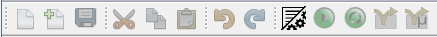

This is the main window. It contains the menus and the toolbar. All other windows are docked to the main window.
Open File: Creates a new file on your file system.
New RTFile: Loads an existing file from your file system.
Save: Saves the current file at a predefined location.
Save as...: Saves the file at the location that is chosen in the appearing dialog box.
Exit: Terminates DESERT.
Undo: Cancel the last change.
Redo: Repeats the last change.
Cut: Deletes selected text in editor and save it to clipboard.
Copy: Copies text to the clipboard.
Paste: Pasts text from the clipboard.
Paste from History: Paste text from the history.
Delete: Deletes the selected text.
Select all: Selects the entire source code.
Select Identifier: Selects the word at the caret.
Mode: Switches between the two modes of DESERT.
Run: Executes the program until you stop it or it reaches an end state.
Reset: Sets the simulator to its initial values.
Step: Executes the statements in the next cycle.
MicroStep: Executes the next statement within a cycle.

Help contens: Shows the help of DESERT.
About: Shows the program information.
The toolbar provides you quick access to the important functions of the menus.
